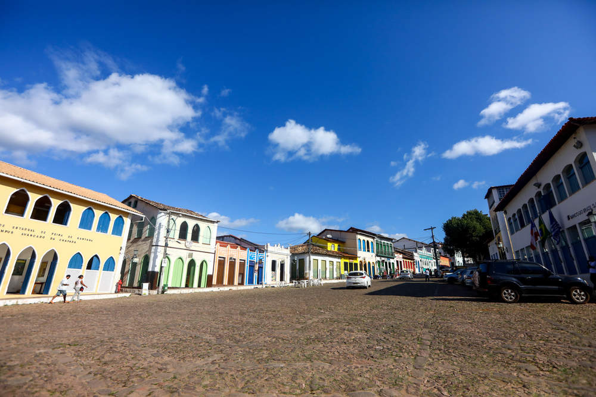
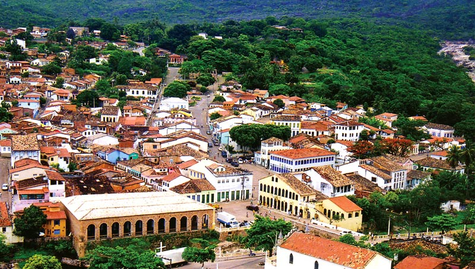
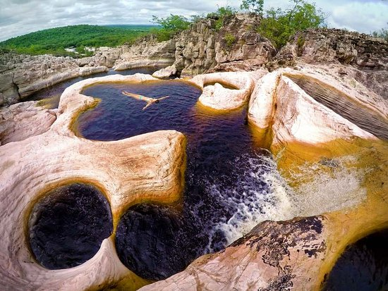
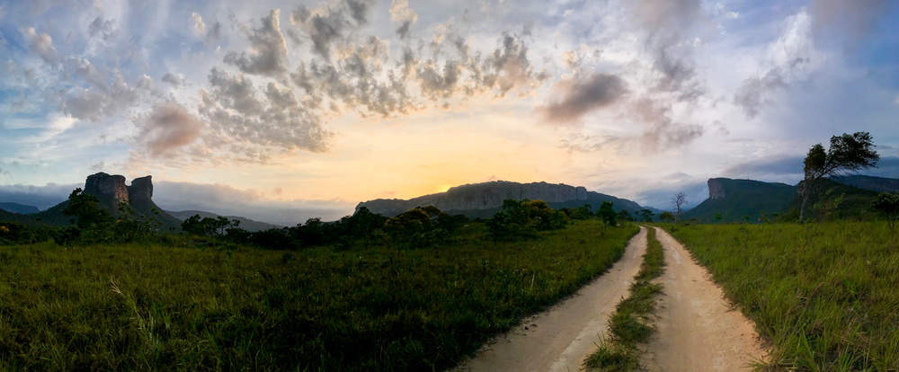

Olá
Cidade de Lençóis
Curiosidades
Lençóis
é tombada pelo Instituto do Patrimônio Histórico e Artístico Nacional (IPHAN), Lençóis é
o portal da Chapada Diamantina, graças à sua infraestrutura hoteleira, com mais de dois mil leitos,
restaurantes de alto nível e voos regulares. Ao longo dos anos, o município vem ganhando ares
cosmopolitas, com residentes dos quatro cantos do mundo. Os seus principais atrativos são os
casarios do século XIX; a história e cultura herdadas do garimpo; a Serra do Sincorá e os
atrativos naturais de fácil acesso em todo o seu entorno. Muitos estão localizados perto do
perímetro urbano, como os poços do Serrano.
- maior concentração de agências de turismo das cidades da região
- Cidade que recebe mais visitantes em números totais
- Detentora de rica história
- Detentora de belíssimos atrativos naturais

História
Na região,O garimpo e a mineração foram os grandes motores econômicos da
Chapada Diamantina nos séculos atrás.
Primeiro o ouro, encontrado no século 18 em Rio de Contas e Jacobina, em seguida o diamante,
cujas primeiras jazidas foram descobertas no começo do século 19 em Mucugê.
Muitas das cidades da Chapada guardam, em seu casario, a lembrança daqueles tempos áureos. Por quase todo o
século 19, a Bahia foi a maior produtora de diamantes do mundo.
Quando foram encontradas as minas da África do Sul, em 1870, a produção decaiu e só foi salva por causa
do carbonado, o chamado “diamante negro”, uma raríssima variedade do diamante usada na indústria.
A Chapada concentrava praticamente toda a produção mundial do carbonado, e foi nos arredores de Lençóis
que se encontrou uma pedra de nada menos que 3 167 quilates, batizada de “Sérgio” – até hoje
o maior diamante já visto no planeta.

Como chegar?
A principal porta de entrada para quem pretende visitar a região é a cidade de Lençóis, localizada a
430 km da capital Salvador. O único aeroporto apto a receber voos comerciais regulares está em Lençóis.
A cidade é também a principal base para quem deseja começar a explorar a Chapada Diamantina,
por isso grande parte dos turistas chega por lá.

O trajeto de Salvador até Lençóis é operado pela Real Expresso/Rápido Federal. A passagem tem custo médio
de R$ 89. A viagem tem 7h de duração e há três horários disponíveis no dia, sempre de manhã, à tarde
e à noite. Vale também seguir de ônibus de Brasília ou São Paulo, mas nos dois casos é preciso
trocar de veículo na cidade de Seabra. Consulte o site da Real Expresso para mais informações
sobre tarifas e horários. A Rodoviária de Lençóis está localizada bem próxima do centro da cidade
e é fácil chegar a pé a grande parte dos hotéis, porém evite malas de rodinha, já que o chão é
todo de pedras.
